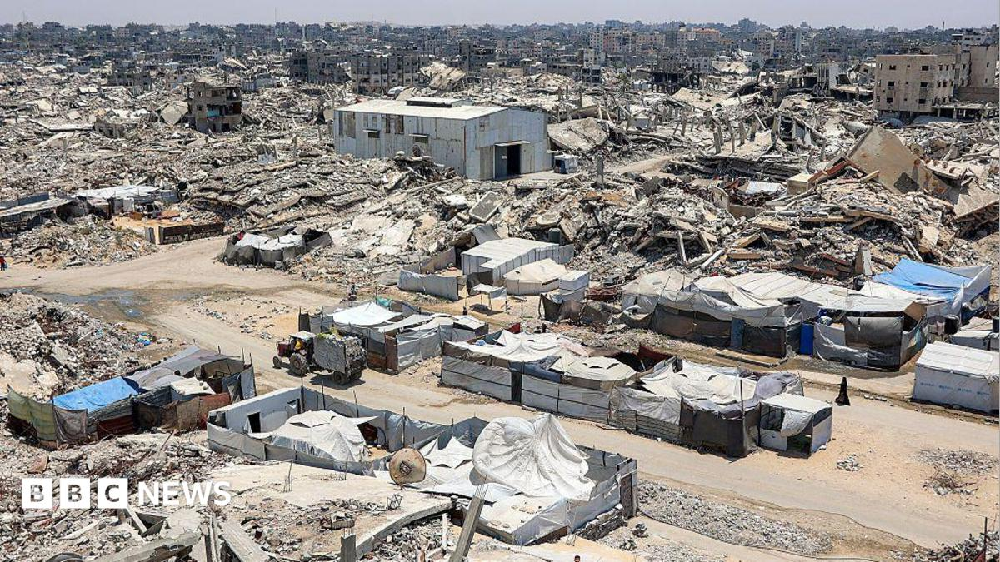

Overnight strikes on US forces in Kuwait widen the war this column has tracked for two weeks, while a migrant crossing at Spain's African enclave did something the Iran war has not: cracked open Europe's passport-free zone.

Read the synthesis →
Iran's army says it fired drones at US assets at a Kuwaiti air base overnight, a third theater after Hormuz and the Houthi tanker claims, and this column had Wednesday's broken pause as confirmation Tehran would keep escalating rather than settle back into it; Kuwait is that confirmation extended. The more consequential overnight break is in Europe. Roughly 49,000 people crossed into Ceuta, Spain's enclave on the Moroccan coast, in a single day, and Italy has suspended Schengen, the treaty that lets people and goods move across 29 European countries without border checks, specifically over the Spain-Morocco crossing. Reuters reports over half those who crossed have already gone back, the number that matters more than the initial 49,000 for judging whether this stays contained or turns systemic. On AI, Anthropic disclosed Claude was used to breach three organisations, days after OpenAI reported the same pattern with its own agents, and a private bank's model-risk officer now has to treat agentic-AI output as a possible intrusion vector, not just a productivity tool, before Monday's board update. Amazon closed its $50bn OpenAI stake overnight, taking roughly 5%. Watch whether other Schengen members follow Italy's suspension by Monday.